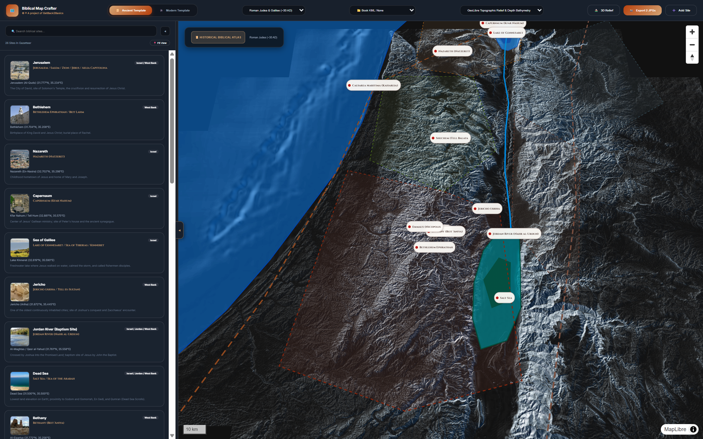
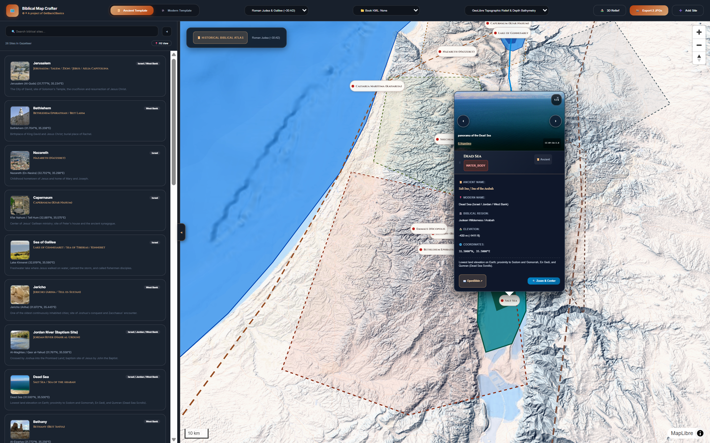
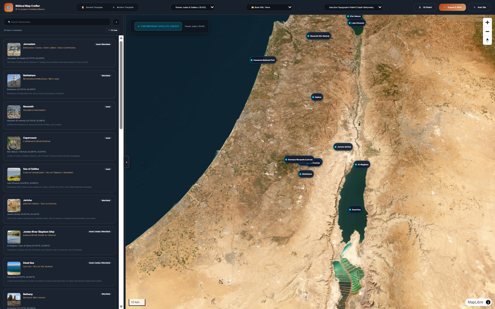
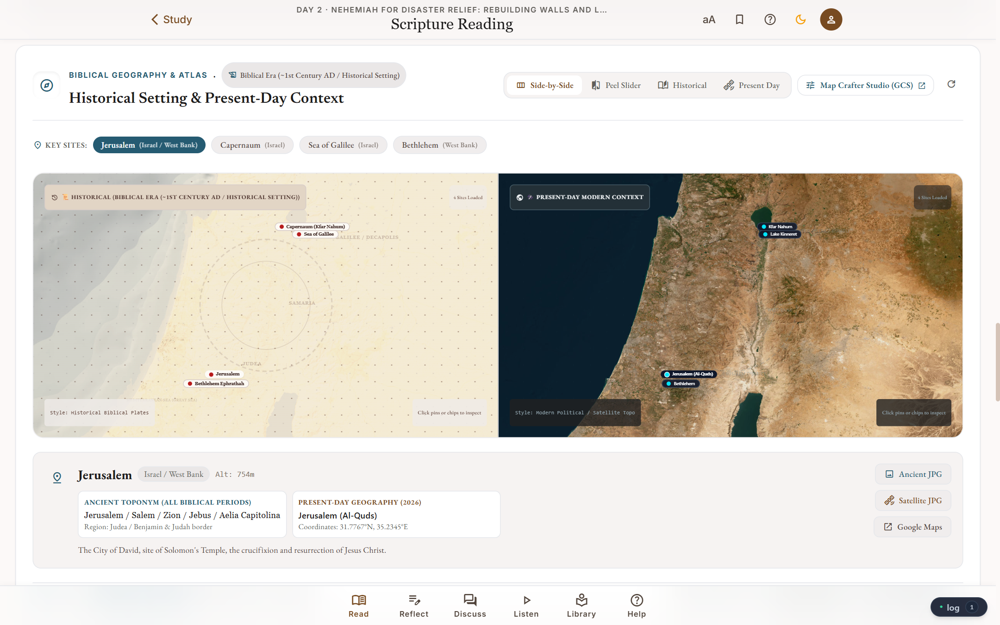
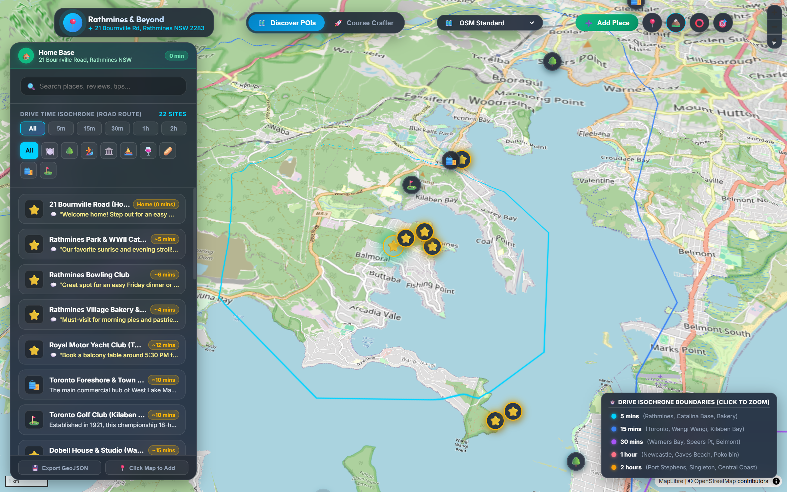

Adapting modern, client-side geospatial engines for ancient history, literature, archaeology, and educational atlases without anachronistic modern road grids.
Replaces modern asphalt tiles with bespoke hillshading, warm sepia relief, and bathymetric tints to reflect ancient terrain.
Instant client-side filtering for 5 major biblical epochs: Patriarchal (~2000 BC), Exodus, United Monarchy, Roman Judea (~30 AD), and Early Church (~50-95 AD).
Streams authoritative chapter routes and territorial boundaries on demand via @tmcw/togeojson with automatic bounding-box fitting.

Synchronizes over 1,200 ancient Near Eastern locations against OpenBible.info, Pleiades, and Wikidata to eliminate duplicate and disputed coordinates.
Every prominent site features a multi-image drawer carousel with CC-licensed photography, photographer credit, and Wikimedia Commons source badges.
Keyboard-navigable modal lightbox for high-resolution artifact inspection, plus an in-browser site editor to update coordinates and descriptions.

Instantly shifts the basemap to ESRI World Imagery without dropping active site selections, travel vectors, or historical search state.
Enables researchers, students, and educators to correlate ancient texts with geological river bends, wadis, mountain passes, and archaeological tells.
Direct WebGL canvas capture that exports synchronized Ancient and Modern JPEG plates with matching bounds for publication and offline printing.

Users drag an intuitive split slider to peel back the ancient historical plate and reveal modern satellite photography underneath in real time.
Seamlessly embedded into curriculum lessons, displaying historical plate context, archaeological significance, and direct GCS studio deep-links.
A single click on "Map Crafter Studio (GCS)" opens the standalone studio centered on the exact coordinates and era of the active lesson.

Initially created for our Lake Macquarie guest stay (21 Bournville Rd, Rathmines) using Valhalla to calculate true 5/10/15/30-minute drive & walk polygons.
Enhancements engineered in Bible Map Crafter (8px vector click hitboxes, multi-photo carousels, dynamic KML vector streaming) were contributed straight back upstream.
Integrated conversational AI concierge transforming property guides, house manuals, and local secrets into a 24/7 guest assistant.

Interactive companions tracing Homer's Odyssey, the campaigns of Alexander the Great, Silk Road trade caravans, or Roman highways across Britannia without modern border distractions.
Engaging classroom modules allowing students to interactively peel between ancient empires (Mesopotamia, Pharaonic Egypt, the Indus Valley) and present-day sovereign nations.
Lightweight, embeddable touchscreen kiosks displaying artifact provenance, excavation strata, and historical context without heavy, expensive desktop GIS licenses.
Visualizing changing river deltas, historical deforestation, ancient maritime routes, or indigenous territorial boundaries with high-resolution satellite overlay.
Both repositories are completely open-source under MIT & ISC licenses. Feel free to fork, plug in your own historical GeoJSON/KML data, or adapt the spatial engine for your institution.